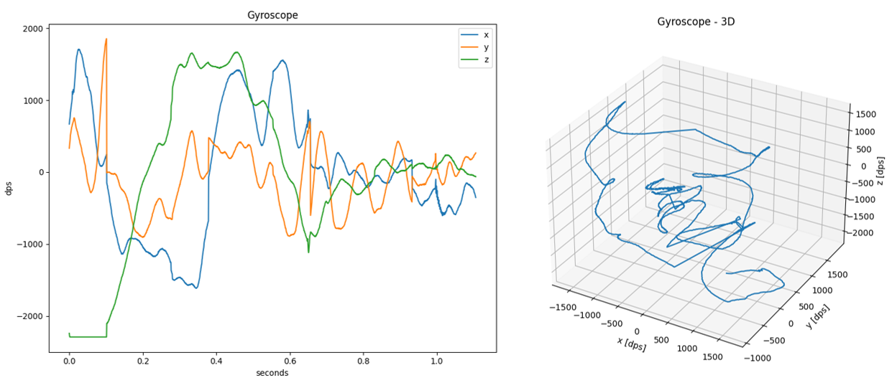

Utilities
The SDS-Framework includes the following utilities that are implemented in Python.
- SDSIO-Server: enables recording and playback of SDS data files via socket (TCP/IP), USB Virtual COM Port (VCOM) or serial (UART) connection.
- SDS-View: graphical data viewer for SDS data files.
- SDS-Convert: convert SDS data files into CSV, Qeexo V2 CSV, or WAV format.
- SDS-Check: check SDS data files for correctness and consistency.
Requirements
- Python 3.9 or later with packages:
- ifaddr
- matplotlib
- numpy
- pandas
- pyyaml
- pyserial
Setup
- Verify the installed Python version with:
python --version
- Option 1: Use a Python environment:
python -m venv sds // create environment with name sds
sds\Scripts\activate
pip install -r requirements.txt
- Option 2: Install the required Python packages with
pip:
pip install ifaddr matplotlib numpy pandas pyyaml pyserial
SDSIO-Server
The Python utility SDSIO-Server enables recording and playback of SDS data files via socket (TCP/IP), USB Virtual COM Port (VCOM) or serial (UART) connection. It communicates with the target using these SDSIO interfaces:
- serial/usart for serial communication via CMSIS-Driver USART.
- socket for TCP/IP communication via IoT Socket using MDK-Middleware, LwIP, or CMSIS-Driver WiFi.
- vcom/mdk for serial communication via USB Virtual COM Port (VCOM) using MDK-Middleware.
The SDS data stream is recorded to files with the following naming convention:
<name>.<index>.sds
<name>is the name of the I/O stream specified with the functionsdsRecOpenorsdsPlayOpenon the target.<index>is the zero-based index which is incremented for each subsequent recording.
The data content of the <name>.<index>.sds is described with metadata file <name>.sds.yml in YAML format.
Usage
- Setup the Python environment.
- Depending on the SDS interface used on the target use either Socket Mode or Serial Mode as described below.
- The SDSIO_Server terminates with
Ctrl+C.
Socket Mode
usage: sdsio-server.py socket [-h] [--ipaddr <IP> | --interface <Interface>] [--port <TCP Port>]
[--outdir <Output dir>]
options:
-h, --help show this help message and exit
optional:
--ipaddr <IP> Server IP address (used on Win, default: computer IP)
--interface <Interface> Network interface (used on MacOS or Linux)
--port <TCP Port> TCP port (default: 5050)
--outdir <Output dir> Output directory
Notes
--ipaddrand--interfaceoptions are mutually exclusive.- SDSIO Server only supports IPv4 addresses.
Example:
For Microsoft Windows (using default computer IP):
python sdsio-server.py socket --outdir ./out_dir
For Linux:
python sdsio-server.py socket --interface eth0 --outdir ./out_dir
Serial Mode
usage: sdsio-server.py serial [-h] -p <Serial Port> [--baudrate <Baudrate>] [--parity <Parity>]
[--stopbits <Stop bits>] [--outdir <Output dir>]
options:
-h, --help show this help message and exit
required:
-p <Serial Port> Serial port
optional:
--baudrate <Baudrate> Baudrate (default: 115200)
--parity <Parity> Parity: N = None, E = Even, O = Odd, M = Mark, S = Space (default: N)
--stopbits <Stop bits> Stop bits: 1, 1.5, 2 (default: 1)
--outdir <Output dir> Output directory
Note
This mode is also used for Virtual COM Port connection.
Example:
python sdsio-server.py serial -p COM0 --baudrate 115200 --outdir ./out_dir
SDS-View
The Python utility SDSIO-View outputs a time-based plot of SDS data files (<name>.<index>.sds) based on the meta-data file (<name>.sds.yml).
The horizontal time scale is derived from the number of data points in a recording and frequency provided in the metadata description. All plots form a single recording will be displayed on the same figure (shared vertical scale).
If there are 3 values described in the metadata file, an optional 3D view may be displayed.
Limitations
- Data in recording must all be of the same type (float, uint32_t, uint16_t, ...)
Usage
- Setup the Python environment.
- Invoke the tool as explained below.
usage: sds-view.py [-h] -y <yaml_file> -s <sds_file> [<sds_file> ...] [--3D]
View SDS data
options:
-h, --help show this help message and exit
required:
-y <yaml_file> YAML sensor description file
-s <sds_file> [<sds_file> ...] SDS data recording file
optional:
--3D Plot 3D view in addition to normal 2D
Example:
python sds-view.py -y test/Gyroscope.sds.yml -s test/Gyroscope.0.sds
Example display:

SDS-Convert
The Python utility SDSIO-Convert converts SDS data files to selected format based on description in metadata (YAML) files.
Usage
- Setup the Python environment.
- Depending on the required format use the tool as shown below.
Audio WAV
The audio_wav mode converts raw microphone data from .sds files into a standard RIFF/WAV file using linear
PCM encoding. The conversion process involves appending a WAV header, generated from parameters specified in the
associated metadata .yml file, to the raw audio data extracted from the .sds stream. The metadata defines
essential audio parameters such as channel configuration (mono or stereo), sample rate (frame rate), and sample
width (bit depth).
usage: sds-convert.py audio_wav [-h] -i <input_file> [<input_file> ...] -o <output_file> [-y <yaml_file> [<yaml_file> ...]]
options:
-h, --help show this help message and exit
required:
-i <input_file> [<input_file> ...] Input file
-o <output_file> Output file
optional:
-y <yaml_file> [<yaml_file> ...] YAML sensor description file
Note
- The metadata and SDS data file pairs must be passed as arguments in the same order to decode the data correctly.
- The tool expects the SDS stream to be strictly audio — no header markers or custom formatting.
Example of metadata yml file for mono microphone:
sds:
name: Microphone
description: Mono microphone with 16kHz sample rate
frequency: 16000
content:
- value: Mono
type: int16_t
Example of metadata yml file for stereo microphone:
sds:
name: Microphone
description: Stereo microphone with 16kHz sample rate
frequency: 16000
content:
- value: Left channel
type: int16_t
- value: Right channel
type: int16_t
Example:
python sds-convert.py audio_wav -i Microphone.0.sds -o microphone.wav -y Microphone.sds.yml
Simple CSV
The simple_csv mode converts sensor data from .sds files into a human-readable CSV format.
This mode is designed for exporting data from a single sensor. If the sensor has multiple
channels, each channel will appear as a separate column in the output CSV.
Timestamps are represented in floating-point format, in seconds. Using the --normalize flag causes
all timestamps in the input file to be offset so that the first timestamp is 0.
Users may specify a time range selection of the input data to be processed using the following flags:
--start-timestamp <timestamp>: Starting input data timestamp in floating-point format, in seconds.--stop-timestamp <timestamp>: Stopping input data timestamp in floating-point format, in seconds.
usage: sds-convert.py simple_csv [-h] -i <input_file> [<input_file> ...] -o <output_file> [-y <yaml_file> [<yaml_file> ...]] [--normalize] [--start-timestamp <timestamp>] [--stop-timestamp <timestamp>]
options:
-h, --help show this help message and exit
required:
-i <input_file> [<input_file> ...] Input file
-o <output_file> Output file
optional:
-y <yaml_file> [<yaml_file> ...] YAML sensor description file
--normalize Normalize timestamps so they start with 0
--start-timestamp <timestamp> Starting input data timestamp, in seconds (default: None)
--stop-timestamp <timestamp> Stopping input data timestamp, in seconds (default: None)
Note
- The metadata and SDS data file pairs must be passed as arguments in the same order to decode the data correctly.
- Current implementation assumes that the tick frequency is
1msand does not use thetick-frequencyvalue from the metadata file.
Example of metadata yml file for gyroscope:
sds:
name: Gyroscope
description: Gyroscope with 1667Hz sample rate
frequency: 1667
content:
- value: x
type: int16_t
scale: 0.07
unit: dps
- value: y
type: int16_t
scale: 0.07
unit: dps
- value: z
type: int16_t
scale: 0.07
unit: dps
Example:
python sds-convert.py simple_csv -i Gyroscope.0.sds -o gyroscope_simple.csv -y Gyroscope.sds.yml --normalize --start-tick 0.2 --stop-tick 0.3
Qeexo V2 CSV
Timestamps are represented in integer format, in milliseconds. Using the --normalize flag causes
all timestamps in the input file to be offset so that the first timestamp is 0.
Users may specify a time range selection of the input data to be processed using the following flags:
--start-timestamp <timestamp>: Starting input data timestamp in integer format, in milliseconds.--stop-timestamp <timestamp>: Stopping input data timestamp in integer format, in milliseconds.
By default, the output file will have raw timestamps in integer format, in milliseconds.
The default output timestamp interval is set to 50 ms.
To override this setting use the --interval <ms> flag, where <ms> is the desired interval in milliseconds.
An optional label can be added to the output by providing a string argument to the --label <text> flag.
This <text> will populate the label column in the output file.
Link to Qeexo V2 CSV format specification.
usage: sds-convert.py qeexo_v2_csv [-h] -i <input_file> [<input_file> ...] -o <output_file> [-y <yaml_file> [<yaml_file> ...]] [--normalize] [--start-timestamp <timestamp>] [--stop-timestamp <timestamp>] [--label 'label'] [--interval <interval>] [--sds_index <sds_index>]
options:
-h, --help show this help message and exit
required:
-i <input_file> [<input_file> ...] Input file
-o <output_file> Output file
optional:
-y <yaml_file> [<yaml_file> ...] YAML sensor description file
--normalize Normalize timestamps so they start with 0
--start-timestamp <timestamp> Starting input data timestamp, in ms (default: None)
--stop-timestamp <timestamp> Stopping input data timestamp, in ms (default: None)
--label 'label' Qeexo class label for sensor data (default: None)
--interval <interval> Qeexo timestamp interval, in ms (default: 50)
--sds_index <sds_index> SDS file index to write (default: <sensor>.0.sds)
Note
- The metadata and SDS data file pairs must be passed as arguments in the same order to decode the data correctly.
- Current implementation assumes that the tick frequency is
1msand does not use thetick-frequencyvalue from the metadata file.
Example of metadata yml file for accelerometer:
sds:
name: Accelerometer
description: Accelerometer with 1667Hz sample rate
frequency: 1667
content:
- value: x
type: int16_t
scale: 0.000061
unit: G
- value: y
type: int16_t
scale: 0.000061
unit: G
- value: z
type: int16_t
scale: 0.000061
unit: G
Examples:
Convert SDS data files to Qeexo V2 CSV files:
python sds-convert.py qeexo_v2_csv -i Gyroscope.0.sds Accelerometer.0.sds -o sensor_fusion.csv -y Gyroscope.sds.yaml Accelerometer.sds.yaml --normalize --start-tick 200 --stop-tick 300
Convert Qeexo V2 CSV files to SDS data files:
python sds-convert qeexo_v2_csv -i accelerometer_data.csv -o accelerometer.sds
SDS-Check
The Python utility SDSIO-Check checks SDS data files for correctness and consistency.
The following checks are performed:
- Size consistency check: data size of all records should match the size of the SDS file.
- Timestamp consistency check: verify that timestamps of the records are in ascending order.
- Jitter check: print the record with the largest deviation from the average timestamp interval.
- Delta time check: find the record with the largest timestamps difference from the following record.
- Duplicate timestamp check: find records that have identical timestamps.
Usage
- Setup the Python environment.
- Invoke the tool as explained below.
usage: sds-check.py [-h] -s [<sds_file>]
SDS data validation
options:
-h, --help show this help message and exit
required:
-s [<sds_file>] SDS data recording file
Example:
python sds-check.py -s Accelerometer.0.sds
File : Accelerometer.0.sds
DataSize : 156.020 bytes
Records : 289
BlockSize: 532 bytes
Largest : 552 bytes
Smallest : 462 bytes
Interval : 50 ms
DataRate : 10.640 byte/s
Jitter : 0 ms
Validation passed
Note
The time values assume an tick rate of 1000 Hz.
Summary Report
After processing the SDS data file, the SDS-Check utility prints a summary report with statistics:
- DataSize: total size of the data in bytes
- Records: total number of records
- BlockSize: average block size of a data record
- Largest: largest block size, if different from the average block size (optional)
- Smallest: smallest block size, if different from the average block size (optional)
- Interval: time interval of the recording in milliseconds
- DataRate: recorded data rate in bytes per second
- Jitter: deviation from the expected timestamps
- DeltaTime: largest difference of the neighboring timestamps, if deviating from the recording interval (optional)
- DupStamps: number of duplicated timestamps, if found (optional)
Size consistency check
This check processes the SDS data records and calculates the total size of the SDS data. It is the sum of all data records (header + data). This data size should match the size of the SDS file.
If the sizes do not match this error is printed:
Error: File size mismatch. Expected 360 bytes, but file contains 363 bytes.
Timestamp consistency check
This check processes the SDS records and ensures that the timestamps recorded in the records are arranged in ascending order. If the utility detects that the timestamp of the subsequent data record is lower than the current one, this error is printed:
Error: Timestamp not in ascending order in record 23.
Jitter check
This check processes the SDS data records and searches for a maximum deviation of the recorded timestamps from the expected ones. If the deviation is found, the record number is saved. The maximum deviation is evaluated as jitter and printed out in the summary report.
File : Gyroscope.0.sds
DataSize : 153.334 bytes
Records : 284
BlockSize: 532 bytes
Largest : 606 bytes
Smallest : 444 bytes
Interval : 50 ms
DataRate : 10.640 byte/s
Jitter : 0 ms
Validation passed
Delta time check
This check processes the SDS records and tries to find the largest difference in timestamps between two neighboring records, called DeltaTime.
For normally recorded files, the delta time and the recording interval are identical, so no information about the delta time status is printed. If the delta time and the recording interval are not identical, i.e. a difference is detected, the record number is also saved and the DeltaTime is printed in the summary report.
File : Temperature.0.sds
DataSize : 360 bytes
Records : 30
BlockSize: 4 bytes
Interval : 1.024 ms
DataRate : 4 byte/s
Jitter : 59 ms, record 19
DeltaTime: 1.050 ms, record 2
Validation passed
This is not an error, but a report of an anomaly. If the time delta is significantly longer than the sampling interval —e.g., several times longer— it may indicate that one or more data records are missing from the recorded file.
Duplicate timestamp check
This check processes the SDS records in search of duplicated timestamps. This means that the same timestamp is used in several consecutive data records.
This may indicate that the recording loop in an embedded application is not set up correctly. It is also possible that duplicate timestamps are caused by unexpected thread delays in the embedded application.
Duplicate timestamps are unusual in typical recording files. If multiple timestamps with the same value are found in the SDS file, DupStamps will be added in the summary report.
File : DataInput.0.sds
DataSize : 17.509.440 bytes
Records : 47.580
BlockSize: 360 bytes
Interval : 1 ms
DataRate : 360.000 byte/s
Jitter : 4 ms, record 4
DeltaTime: 5 ms, record 5
DupStamps: 4, record 1
Validation passed
This is not an error, but a report of an anomaly. The report contains the number of records with the same timestamp and the position in the SDS file where the anomaly was detected (record number).
Note
Only the first occurrence of a duplicate timestamp is reported.